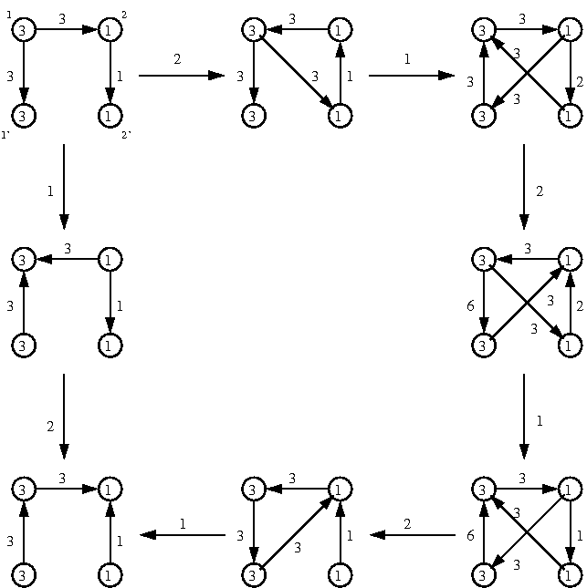

$G_2$ 型 dilogarithm 恒等式を例に使った説明
黒木玄
MathJax版2011年3月20日 (LaTeX版2010年12月29日PDF)
正式に発表していない結果を含み, かなり雑に書いた部分もあるので取り扱い注意!
このファイルの中の数式は LaTeX のコードで書かれており, MathJax を用いて数式に自動変換されるようにしてある. MathJax の使い方の詳しい説明については「MathJaxの使い方」を見よ。
クラスター代数について学ぶときの最初の面倒ごとは 歪対称化可能行列 $B=[b_{ij}]$ の変異の定義である.
$I=\{1,2,\ldots,n\}$ であるとし, $\{d_i\}_{i\in I}$ は正の整数の族である とする. このとき整数行列 $B=[b_{ij}]_{i,j\in I}$ が $\{d_i\}_{i\in I}$ に よって歪対称化可能であるとは $d_ib_{ij}=-d_jb_{ji}$ ($i,j\in I$) が成立する ことである. 以下 $B=[b_{ij}]$ は $\{d_i\}_{i\in I}$ によって歪対称化可能 な整数行列であるとする.
各 $k\in I$ に対して $B$ の $k$-mutation $B'=[b'_{ij}]$ が 次のように定義される: \begin{equation*} b'_{ij} = \begin{cases} -b_{ij} & \text{if $i=k$ or $j=k$}, \\ b_{ij}+b_{ik}b_{kj} & \text{if $b_{ik},b_{kj}>0$}, \\ b_{ij}-b_{ik}b_{kj} & \text{if $b_{ik},b_{kj}<0$}, \\ b_{ij} & \text{otherwise}. \end{cases} \end{equation*} このとき $B'=[b_{ij}]$ も $\{d_i\}_{i\in I}$ によって歪対称化可能になる.
このように定義された歪対称化可能整数行列の $k$-mutation を どのようにして直観的に理解するかが問題である.
よく知られている方法は $d_i$ がすべて $1$ の場合 すなわち $B$ 自身が歪対称の場合には quiver (頂点を矢印で繋いだ図形)を 描いて, 直観的に $k$-mutation を記述できることがよく知られている.
このノートの目標は $B$ 自身が歪対称とは限らない一般の場合 に quiver を用いて $k$-mutation を記述することである. 各種文献を見てもまったく同じ記述を見付けることができなかったので公開する ことにした. (同値な記述ならいくらでもある. しかし私には valued quiver による記述は 直観的に解り難いように感じられた.)
一般の場合の $k$-mutation は $B=[b_{ij}]$ 自身ではなく, 対応する歪対称行列 $C=[c_{ij}]=[d_ib_{ij}]$ の言葉で記述しておくと, quiver を用いた直観的理解と相性が良くなる. $c'_{ij}=d_ib'_{ij}$ とおくと, \begin{equation*} c'_{ij} = \begin{cases} -c_{ij} & \text{if $i=k$ or $j=k$}, \\ c_{ij}+c_{ik}c_{kj}/d_k & \text{if $c_{ik},c_{kj}>0$}, \\ c_{ij}-c_{ik}c_{kj}/d_k & \text{if $c_{ik},c_{kj}<0$}, \\ c_{ij} & \text{otherwise}. \end{cases} \end{equation*} $b_{ij}$, $b'_{ij}$ の場合との違いは $d_k$ で割るという操作が 入っていることである. おそらく $\{d_i\}_{i\in I}$ には この式で表わされるような内在的な意味があるのだろう.
歪対称な整数行列 $B=[b_{ij}]_{i,j\in I}$ に対して次のようにして頂点を矢線で繋いでできる図形 $Q$ (これを quiver と呼ぶ)を対応させる:
このとき $B$ の $k$-mutation $B'=[b'_{ij}]_{i,j\in I}$ に対応する quiver $Q'$ は以下のように記述される:
$\{d_i\}_{i\in I}$ は正の整数の族であるとし, $B=[b_{ij}]_{i,j\in I}$ は $\{d_i\}_{i\in I}$ によって歪対称化可能な整数行列であるとし, 歪対称行列 $C=[c_{ij}]_{i,j\in I}$ を $c_{ij}=d_ib_{ij}=-d_jb_{ji}$ と定める. この $C$ に対していつものように quiver $Q$ を対応させる:
この $Q$ における $j$ から $i$ への矢線の本数を $a$ と 書くと $a/d_i=b_{ij}$, $-a/d_j=b_{ji}$.
このとき $B$ の $k$-mutation $B'=[b'_{ij}]_{i,j\in I}$ に対応する quiver $Q'$ は以下のように記述される:
$B$ 自身が歪対称の場合との違いは最初のステップで追加する矢線の本数 を $d_k$ で割ることである. 頂点 $k$ を経由する $i\to k\to j$ という 経路の本数は $d_k$ によって割られることによって減らされるとおぼえて おけばよいだろう.
$I=\{1,2,3,4\}$, $D=\diag(d_1,d_2,d_3,d_4)=\diag(3,1,3,1)$ で
\begin{equation*} B = [b_{ij}] = \begin{bmatrix} 0 &-1 &-1 & 0 \\ 3 & 0 & 0 &-1 \\ 1 & 0 & 0 & 0 \\ 0 & 1 & 0 & 0 \\ \end{bmatrix}, \quad C = [c_{ij}] = DB = \begin{bmatrix} 0 &-3 &-3 & 0 \\ 3 & 0 & 0 &-1 \\ 3 & 0 & 0 & 0 \\ 0 & 1 & 0 & 0 \\ \end{bmatrix} \end{equation*}
あるとする. この $B$ は $3,4$ が ``frozen variables'' に対応していると仮定 すればちょうど $G_2$ 型の場合に対応している. すなわち $B$ の左上の $2\times 2$ のブロックから $a_{ij}$ を $a_{ij}=-|b_{ij}|$, $a_{ii}=2$ で $2\times 2$ 行列 $[a_{ij}]$ を 作ると $G_2$ 型の Cartan 行列が得られる.
この $B$ に $1,2$ の順に mutation を繰り返した結果と $2,1,2,1,2,1$ の順に mutation を繰り返した結果は一致する. それを quiver を用いて描くと 次の図のようになる.
図: $G_2$ 型の場合の例

出発点の quiver (図の左上の quiver)は次のようにして描かれた. まず4つの頂点を丸で描き, その中に $d_i$ の数字を書き込む. 交代行列の成分の第 $j$ 列を縦に見て行き, 正の数 $a$ が $i$ 番目にあったら 頂点 $j$ から頂点 $i$ に矢線を引き, その矢線のそばに数字 $a$ を書きこむ. 数字 $a$ はその矢線が実際には $a$ 本あることを意味する. 念のために各頂点のそばにその頂点を表わす番号も書いておいた.
上の行列 $B$ の正の成分 $b_{ij}$ は頂点 $j$ から頂点 $i$ への 矢線の本数 $c_{ij}$ を矢線の先の頂点に書かれている数字 $d_i$ で割ること によって得られ, 負の成分 $b_{ij}$ は頂点 $j$ への頂点 $i$ からの 矢線の本数 $c_{ji}=-c_{ij}$ を $d_i$ で割って $-1$ 倍することによって 得られる.
前節で説明した行列の mutatation を quiver で描く方法を説明しよう.
$1$-mutation の結果の quiver (図の左の列の真ん中)の描き方を説明しよう.
頂点 $1$ を経由する長さ $2$ の経路は出発点の quiver に存在しない. だから $1$-mutation の結果の図は出発点の quiver の頂点 $1$ に繋がって いる矢線の向きを逆転させるだけで得られる.
$2$-mutation の結果の quiver (図の上の段の真ん中)の描き方を説明しよう.
出発点の quiver において, 頂点 $2$ を経由する長さ $2$ の経路は $1\to2\to4$ の一種類しか存在しない. $1\to 2$ に $3$ 本, $2\to 4$ に $1$ 本の矢線があるので, $1\to2\to4$ の経路は $3\times 1=3$ 通りある. よって $2$-mutation の結果の quiver の $1\to4$ には $3$ 本の矢線を 描かなければいけない.
最後に $2$ に繋がっている矢線の向きを逆転させれば $2$-mutation の 結果の quiver が得られる.
$2$-mutation のあとに $1$-mutation した結果の quiver (図の右上の quiver)の描き方を説明しよう.
$2$-mutation の結果の quiver では $1$ を経由する長さ $2$ の経路は $2\to 1\to 3$ と $2\to 1\to 4$ の二種類ある. そのそれぞれに対応して新たな矢線の追加を行なうことになる.
$2\to 1\to 3$ には $3\times 3=9$ 通りの経路があるが, 頂点 $1$ に $d_1=3$ がいるのでそれで割って得られる $9/3=3$ 本の矢線が $2\to 3$ に描かれることになる.
$2\to 1\to 4$ には $3\times 3=9$ 通りの経路があるが, 頂点 $1$ に $d_1=3$ がいるのでそれで割って得られる $9/3=3$ 本の矢線が $2\to 4$ に描かれることになる. しかし逆向きの矢線がもとから $1$ 本あるので キャンセルさせて $2\to 4$ には $2$ 本の矢線を書き込むことになる.
最後に頂点 $1$ に繋がっている矢線の向きをすべて逆転させれば $2,1$ の 順番に mutation をほどこした結果の quiver が描かれる.
他の quiver の描き方も同様である.
上の図における各 quiver から行列 $B$ の mutation の結果 $B'$ の 左下の $2\times 2$ のブロック \( \begin{bmatrix} b'_{31} & b'_{32} \\ b'_{41} & b'_{42} \\ \end{bmatrix} \) の成分を次のようにして読み取ることができる: 頂点 $j=1,2$ から頂点 $i=3,4$ への矢線の本数 が $a$ 本ならば $b'_{ij}=a/d_i$ であり, 頂点 $j=1,2$ への頂点 $i=3,4$ からの矢線の本数 が $a$ 本ならば $b'_{ij}=-d_i^{-1}d_jb'_{ji}=-a/d_i$ である. どちらも $i=3,4$ の頂点に対応する $d_i$ で割っていることに注意せよ.
その $2\times 2$ のブロックの第 $j=1,2$ 列のそれぞれに $y_1,y_2$ の 単公式 $y_1^{b'_{3j}}y_2^{b'_{4j}}$を対応させる. このようにして得られる単公式は次の図式のようになる:
\begin{equation*} \begin{array}{ccccc} y_1,y_2 &\overset2\rightarrow& y_1y_2^3, y_2^{-1} &\overset1\rightarrow&y_1^{-1}y_2^{-3}, y_1y_2^2 \\ \scriptsize1\downarrow & & & &\downarrow\scriptsize2 \\ y_1^{-1},y_2 & & & &y_1^2y_2^3, y_1^{-1}y_2^{-2}\\ \scriptsize2\downarrow & & & &\downarrow\scriptsize1 \\ y_1^{-1},y_2^{-1}&\overset1\leftarrow &y_1,y_1^{-1}y_2^{-1}&\overset2\leftarrow &y_1^{-2}y_2^{-3}, y_1y_2 \\ \end{array} \end{equation*}
この図式は $y$-variables の ``tropical mutation'' の図式とみなせる.
さらにこの図式から単公式の列を次のように抽出する: $k$-mutation を意味する矢線の根っこの方 の $k$ 番目の単公式を次々に取り出して並べる. すると $1,2$ と $2,1,2,1,2,1$ の mutation の列に対応して 次の二つの単公式の列が得られる:
\begin{equation*} \begin{cases} 1,2 \to y_1, y_2, & \\ 2,1,2,1,2,1 \to y_2, y_1y_2^3, y_1y_2^2, y_1^2y_2^3, y_1y_2, y_1. \\ \end{cases} \end{equation*}
この二つの単公式の列から $G_2$ 型の量子 dilogarithm 恒等式が得られることを 説明しよう.
変数 $y_1,y_2$ について $q$ 交換関係
\begin{equation*} q^{-c_{ij}}y_iy_j=q^{-c_{ji}}y_jy_i \end{equation*}
すなわち $q^3y_1y_2=q^{-3}y_2y_1$ を仮定し, 量子 dilogarithm $E_v(y)$ を
\begin{equation*} E_v(y) = \sum_{k=0}^{\infty}\frac{v^{k^2}y^k}{(1-v^2)(1-v^4)\cdots(1-v^{2k})} = (1+vy)(1+v^3y)(1+v^5y)\cdots \end{equation*}
と定め, $q_i=q^{d_i}$ すなわち $q_1=q^3$, $q_2=q$ とおき, normal product を $\np{y_1^ay_2^b}=q^{3ab}y_1^ay_2^b$ と定める. このとき上で得られた単公式の normal product を量子 dilogarithm に代入すること によって得られる次の $G_2$ 型恒等式が成立している:
\begin{equation*} E_{q_1}(y_1)E_{q_2}(y_2) = E_{q_2}(y_2)E_{q_1}(\np{y_1y_2^3}) E_{q_2}(\np{y_1y_2^2})E_{q_1}(\np{y_1^2y_2^3}) E_{q_2}(\np{y_1y_2})E_{q_1}(y_1). \end{equation*}
実はこの恒等式の証明は pentagon 恒等式に帰着される. まず上と同様の方法で得られる $D_4$ 型恒等式からこの $G_2$ 型恒等式 が得られること(foldingの一種と考えられる)を示し, さらに $D_4$ 型恒等式を pentagon 恒等式を用いた簡単な等式変形によって示せる.
量子 dilogarithm は pentagon 恒等式
\begin{equation*} E_q(y)E_q(y')=E_q(y')E_q(qyy')E_q(y), \quad qyy'=q^{-1}y'y \end{equation*}
によって一意に特徴付けられる. すなわち $0$ 次と $1$ 次の係数が $0$ でない 形式べき級数で pentagon 恒等式を満たすものは量子 dilogarithm しか存在しない. (なぜならば pentagon 恒等式の両辺の $y'$ について $0$ 次と $1$ 次の係数を 比較すると量子 dilogarithm を一意に特徴付ける $q$ 差分方程式が得られるか らである.) だから量子 dilogarithm 恒等式は本質的に pentagon 恒等式で尽きているはず である. しかし pentagon 恒等式だけを用いた等式変形によって``すべての'' 量子 dilogarithm 恒等式が得られるかどうかは自明ではないように思われる.
次に量子 dilogarithm の $-1$ 乗(inverse)が登場するような より一般の恒等式の作り方について説明しよう.
実際には $k$-mutation は involution なので前節の monomials の図式に おける $k$-mutation を表わす矢印は両向きであると考えることもできる. しかし矢印の向きを次のルールで決めておくと量子 dilogarithm 恒等式を 考えるときに便利である: $k$-mutation の矢線の根っこの方にある $k$ 番目の monomial のべき指数がすべて正になるように矢線の向きを定める. この条件によって $k$-mutation を表わす矢線の向きは一意に定まる.
このように矢線の向きを定めておけば前節の monomials の図式の始点と終点を どこに設定してもそれに対応する量子 dilogarithm 恒等式が以下のようにして 得られる. まず, 始点から終点への二つの経路に対して量子 dilogarithm もしくは その inverse の積を次のように対応させる: $k$-mutation を表わす矢線の根っこ方にある $k$ 番目の monomial が $Y$ である とき, 経路がその矢線の向きに進む場合には $E_{q_k}(\np{Y})$ を右側にかけ, 経路がその矢線の逆向きに進む場合には $E_{q_k}(\np{Y})^{-1}$ を右側にかける. このとき, 二つの経路に対応して量子 dilogarithm もしくはその inverse をかけ 合わせたものが二つできるが, それらを等号で結ぶと恒等式が得られる. たとえば左下を始点, 右上を終点にすると次の量子 dilogarithm 恒等式が得られる:
\begin{align*} & E_{q_2}(y_2)^{-1}E_{q_1}(y_1)^{-1}E_{q_2}(y_2)E_{q_1}(\np{y_1y_2^3}) \\ &= E_{q_1}(y_1)^{-1}E_{q_2}(\np{y_1y_2})^{-1}E_{q_1}(\np{y_1^2y_2^3})^{-1}E_{q_2}(\np{y_1y_2^2})^{-1} \end{align*}
ここでは $G_2$ 型の場合しか説明していないが, 他の一般の場合も同様である.
つまり, $y$-variables の ``tropical mutation'' の繰り返しの結果(複数) が置換の違いを除いて互いに等しくなるならば, それに対応して上の方法で量子 dilogarithm 恒等式が得られる. 置換が登場する最も簡単な場合は $A_2$ 型恒等式の場合 すなわち pentagon 恒等式の場合である. そして $G_2$ 型の場合でも成立していることからもわかるよう に, $B$ が歪対称であると仮定しなくてもよい. さらに上の例では $E_{q_k}(\np{Y})$ の inverse が現われない恒等式に帰着 することが明らかな場合しか扱っていないが, 帰着できることが自明でない場合であっても $k$-mutation の矢線の向きの決め 方のルールは適用できるのでやはり同様にして量子 dilogarithm 恒等式が得られる. 量子 dilogarithm の inverse は矢線の向きを逆にたどるときに登場する. (しかし, このノートを書いている時点で, 本質的に量子 dilogarithm の inverse が必要不可欠な 量子 dilogarithm 恒等式の例を筆者は知らない. それどころか pentagon 恒等式を用いた等式変形だけで証明できない 量子 dilogarithm 恒等式の例があるかどうかも筆者は知らない.)
要するに量子 dilogarithm 恒等式の世界は $y$-variables の ``tropical mutation'' によって支配されているということである.
Fock-Goncharov による量子版 mutation の定式化との関係についても 簡単に説明しよう. まず彼らが $y$-variables を $X_i$ と書いていることには 注意しなければいけない.
彼らは mutation を monomials を monomials にうつす monomial mutation $\mu'_k$ と 量子 dilogarithm による conjugation で定義される conjugation mutation $\mu^\sharp_k$ の合成に分解している. 量子版の mutation をそのように分解したことが以下の議論で本質的に使われる.
まず量子版の mutation の二通りの繰り返しの結果が置換の違いを除いて一致し たと仮定する. このとき対応する tropical mutation の二通りの繰り返しの結果も 置換の違いを除いて一致する.
前節の意味で矢線の向きに沿った Fock-Goncharov の monomial mutation $\mu'_k$ は tropical mutation に一致しており, 前節の意味での矢線の向きを逆にたどる monomial mutation の inverse $(\mu'_k)^{-1}$ は tropical mutation に一致している.
このことより, tropical mutation の二通りの繰り返しの結果が置換の違い を除いて一致することは $\mu'_k$ もしくは $(\mu'_k)^{-1}$ たちの二通りの 積の結果が置換の違いを除いて一致することを意味する.
量子版の mutation の二通りの繰り返しが置換を除いて一致することを 意味する等式の両辺において, $\mu'_k$ および $(\mu'_k)^{-1}$ たち を片側に寄せて, $\mu'_k$ もしくは $(\mu'_k)^{-1}$ たちの二通りの積の結果が 置換を除いて一致することを使えば, 両辺における置換の作用と monomial mutations の部分 を互いにキャンセルさせて消すことができる.
それによって量子 dilogarithm の conjugation で定義された $\mu^\sharp_k$ および その inverse $(\mu^\sharp_k)^{-1}$ たちの二通りの合成が互いに等しいこと を意味する等式が得られる. その等式の両辺は量子 dilogarithm だけで表わされている.
このような方針で量子 dilogarithm 恒等式が Fock-Goncharov による 量子版の mutation の定式化から得られるというわけである.